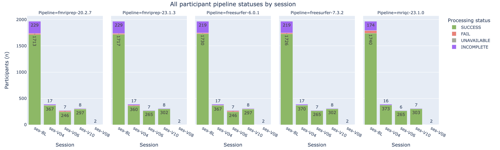

Trackers
Track data availability status
Trackers check the availability of files created during the dataset processing workflow (specifically the BIDS raw data and imaging pipeline derivatives) and assign an availability status (SUCCESS, FAIL, INCOMPLETE or UNAVAILABLE).
Key directories and files
<DATASET_ROOT>/bids<DATASET_ROOT>/derivatives<DATASET_ROOT>/derivatives/bagel.csv
Running the tracker script
The tracker uses the manifest.csv and doughnut.csv files to determine the participant-session pairs to check. Each available tracker has an associated configuration file (typically called <pipeline>_tracker.py), where lists of expected paths for files produced by the pipeline are defined.
For each participant-session pair being tracked, the tracker outputs a "pipeline_complete" status. Depending on the configuration for that particular pipeline, the tracker might also output phase and/or stage statuses (e.g., "PHASE__func"), which typically refer to sub-pipelines within the full pipeline that may or may not have been run during processing, depending on the input data and/or processing parameters.
The tracker script updates the tabular <DATASET_ROOT>/derivatives/bagel.csv file (see the Understanding the bagel.csv output for more information).
Sample command:
python nipoppy/trackers/run_tracker.py \ --global_config <global_config_file> --dash_schema nipoppy/trackers/bagel_schema.json --pipelines fmriprep mriqc tractoflow heudiconv
Notes:
- Currently available image processing pipelines are: fmriprep, mriqc, and tractoflow. See Adding a tracker for the steps to add a new tracker.
- Use --pipelines heudiconv for tracking BIDS data availability
- An optional --session_id parameter can be specified to only track a specific session. By default, the trackers are run for all sessions.
- Other optional arguments include --run_id and --acq_label, to help generate expected file paths for BIDS Apps.
Understanding the bagel.csv output
A JSON schema for the bagel.csv file produced by the tracker script is available here.
Here is an example of a bagel.csv file:
| bids_id | participant_id | session | has_mri_data | pipeline_name | pipeline_version | pipeline_starttime | pipeline_complete |
|---|---|---|---|---|---|---|---|
| sub-MNI001 | MNI001 | 1 | TRUE | freesurfer | 6.0.1 | 2022-05-24 13:43 | SUCCESS |
| sub-MNI001 | MNI001 | 2 | TRUE | freesurfer | 6.0.1 | 2022-05-24 13:46 | SUCCESS |
| sub-MNI001 | MNI001 | 3 | TRUE | freesurfer | 6.0.1 | UNAVAILABLE | INCOMPLETE |
The imaging derivatives bagel has one row for each participant-session-pipeline combination. The pipeline status columns are "pipeline_complete", and any column whose name begins by "PHASE__" or "STAGE__". The possible values for these columns are:
- "SUCCESS": All expected pipeline output files (as configured by pipeline tracker) are present.
- "FAIL": At least one expected pipeline output is missing.
- "INCOMPLETE": Pipeline has not been run for the subject session (output directory missing).
- "UNAVAILABLE": Relevant MRI modality for pipeline not available for subject session (determined by the datatype column in the dataset's manifest file).
Adding a tracker
- Create a new file in
nipoppy/trackerscalled<new_pipeline>_tracker.py. - Define a config dictionary
tracker_configs, with a mandatory key"pipeline_complete"whose value is a function that takes as input the path to the subject result directory, as well as the session and run IDs, and outputs one of"SUCCESS","FAIL","INCOMPLETE", or"UNAVAILABLE". See the built-in fMRIPrep tracker for an example. - Optionally add additional stages and phases to track. Again, refer to the fMRIPrep tracker for to any other pre-defined tracker configuration for an example.
- Modify
nipoppy/trackers/run_tracker.pyto add the new tracker as an option.
Visualizing availability status with the Neurobagel digest
The bagel.csv file written by the tracker can be uploaded to https://digest.neurobagel.org/ (as an "imaging CSV file") for interactive visualizations of processing status.
